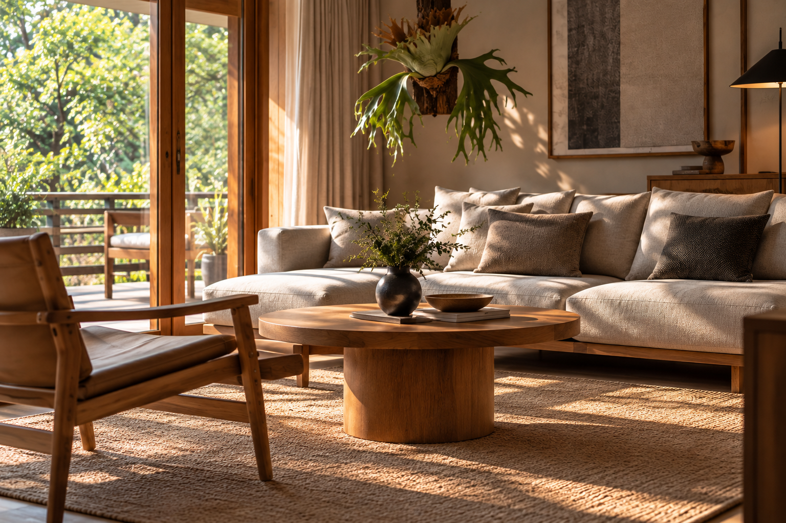

心地よい空間づくりで、
5つのポイント
高級ホテルのように、落ち着いて過ごせる部屋。
そんな空間をつくるために、
必ずしも高価な家具をそろえる必要はありません。
大切なのは、色・素材・光・収納・余白のバランスです。

01. 色数を抑えて、統一感をつくる
ホテルライクな部屋づくりで、 最初に見直したいのが配色です。
白、ベージュ、グレー、ブラウンなど、 落ち着いた色を中心にまとめると、 空間に統一感が生まれます。
例えば、壁や大きな家具はベージュ系に。 木製家具で温かみを加え、 照明や小物にブラックを少し取り入れる。
それだけでも、まとまりのある 落ち着いた印象に近づけます。
すべてを同じ色にする必要はありません。
ベースとなる色を決めて、 アクセントカラーを少し加えると、 単調になりすぎない空間をつくれます。
02. 素材の質感を組み合わせる
同じベージュやブラウンでも、 素材によって見え方は大きく変わります。
木材で温かみを加える
オークやウォールナットなどの木材は、 落ち着いたインテリアによくなじみます。
テーブルや収納家具だけでなく、 木製トレーや小さなオブジェなど、 手軽なアイテムから取り入れることもできます。
布でやわらかさをつくる
リネン調のカーテンや、 ざっくりとした織りのクッション。 こうした布の質感は、 空間にやわらかな印象を加えます。
石や金属をアクセントに
石目調のトレーや、 ブラック・真鍮色の金属小物などを少し加えると、 空間にメリハリが生まれます。
おすすめの組み合わせ
オーク材 × ベージュのファブリック × ブラックの照明。
木の温かみを残しながら、
すっきりとした印象にまとめやすい組み合わせです。
03. 間接照明で、夜の雰囲気を整える
ホテルのような落ち着いた雰囲気をつくるうえで、 照明は重要な要素です。
天井の照明だけで部屋全体を照らすのではなく、 フロアライトやテーブルランプなどを 組み合わせてみましょう。
光の高さを変える
天井、目線の高さ、足元など、 異なる位置に光があると、 空間に奥行きが生まれます。
温かみのある光を選ぶ
くつろぐ空間には、 2700〜3000K前後の電球色が ひとつの目安になります。
ただし、読書や作業をする場所では、 用途に合った明るさも確保しましょう。
1. まずはテーブルランプをひとつ置く
2. ソファ横にフロアライトを追加する
3. 必要に応じて壁際や棚に光を加える
照明について詳しく知りたい方は、 「空間を変える、間接照明の選び方」 も参考にしてみてください。
04. 生活感を隠しすぎず、整える
ホテルライクな空間を目指すとき、 生活用品をすべて隠そうとすると、 かえって使いにくくなることがあります。
大切なのは、 日常的に使うものの置き場所を決めることです。
見える場所には、少数のアイテムを
テーブルの上には、 トレーや花器など、 お気に入りのものを少しだけ。
リモコンや充電ケーブルなどは、 ボックスや引き出しにまとめると すっきりした印象になります。
余白を残す
棚のすべての段にものを並べるのではなく、 何も置かない場所をつくることも大切です。
余白があることで、 お気に入りの家具や小物が より引き立ちます。
05. アートや小物で、自分らしさを加える
ホテルライクな部屋は、 ただ整っているだけではなく、 どこか印象に残る要素があると魅力的です。
例えば、壁に飾ったアート。 棚の上の陶器。 好きなデザインのテーブルランプ。
そうしたアイテムが、 空間に個性を与えてくれます。
最初はひとつだけ選ぶ
小物をたくさん並べるより、 気に入ったものをひとつ選んで 飾るところから始めてみましょう。
部屋全体の色や素材との相性を考えると、 まとまりのある印象を保ちやすくなります。
予算別・取り入れ方のアイデア
光と小物を見直す
電球色のランプや木製トレーなど、 比較的手頃なアイテムから取り入れてみましょう。 価格は購入時期や商品によって異なります。
照明とファブリックを組み合わせる
テーブルランプに加え、 クッションカバーやラグなどを見直すと、 部屋の印象を変えやすくなります。
主役になるアイテムを選ぶ
フロアライトやサイドテーブルなど、 毎日使う家具・照明をじっくり選ぶのもおすすめです。
まずは、ひとつの場所から。
ホテルライクな部屋づくりは、 一度にすべてを変える必要はありません。
ベッドサイドの照明を見直す。 テーブルの上を整える。 クッションの色をそろえる。
そんな小さな工夫を積み重ねることで、 自分にとって心地よい空間に近づいていきます。
大切なのは、高級ホテルをそのまま再現することではなく、 その心地よさを自分の暮らしに取り入れることです。
← STILL ROOM トップへ戻る